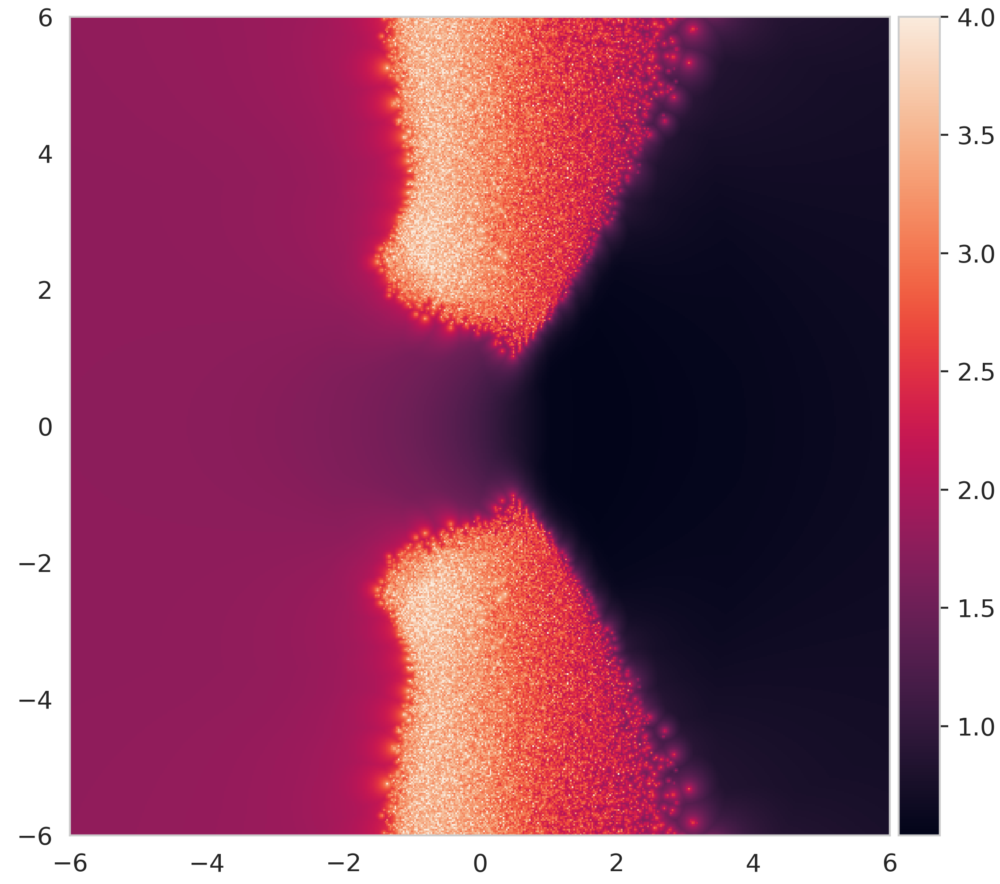
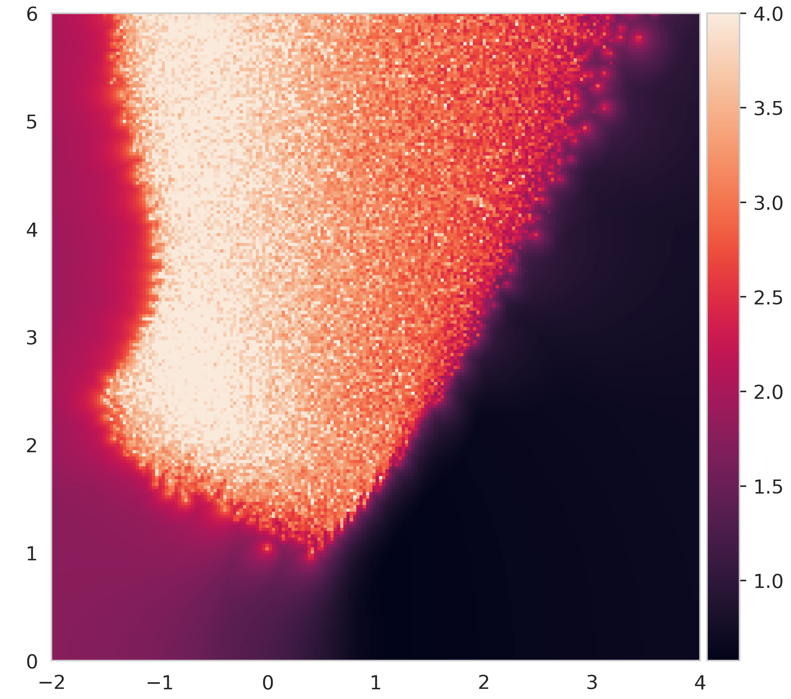

The divergence proof of weighted average multiplicity for real s<1 over integer ABC triples is formalized in Lean 4, with code in a public repository.
Abstract
We study a generalisation of the quality of an ABC triple that we call the weighted average multiplicity (WAM), in which the logarithmic heights of prime factors are raised to a complex exponent s. The WAM is connected to the standard ABC conjecture at s=1. We show that for real part of s less than 1, WAM is unbounded over ABC triples both for integers and polynomials. For real part greater than 1, we characterise a boundary beyond which WAM is holomorphic and bounded. In this region, we show that WAM is related to the multiplicity of the largest prime factor of the triple, a quantity that we connect with the original ABC conjecture and whose distribution we explore computationally.
Problem
The weighted average multiplicity (WAM) of an ABC triple generalises the ABC quality by raising the logarithmic heights of the prime factors to a complex exponent s. At s=1 it connects to the ABC conjecture. The question is how WAM behaves over ABC triples as s varies.
Approach
Divergence for Re(s)<1 over integers is shown using the triples (1, 2^n-1, 2^n). The argument bounds the number of prime factors via the prime number theorem and uses Jensen's inequality. For polynomials over Q[x] and F_p[x], triples with few irreducible factors but large multiplicities are constructed. The real-s integer proof is formalized in Lean 4. For Re(s)>=1, behaviour is explored numerically on a dataset of over 10^7 ABC triples.
Results
WAM is unbounded over ABC triples for Re(s)<1, for both integers and polynomials. For Re(s)>1, there is a boundary beyond which WAM is holomorphic and bounded and is governed by the multiplicity of the largest prime factor. The distribution of that multiplicity is studied computationally.

(a) Large section of the complex plane, where \max is taken over 50000 triples.

(b) Zoomed in region with poles, where \max is taken over 5\times 10^{5} triples.